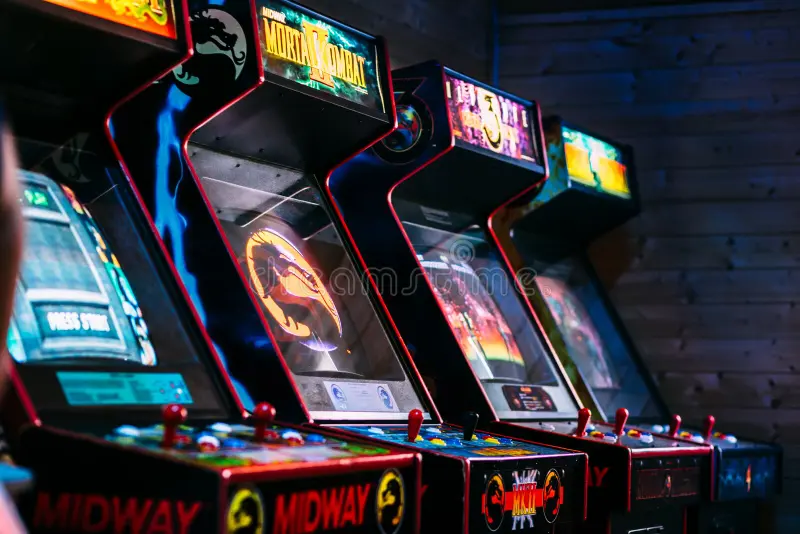

About Us

Arcade & Adventures
At Sakura Quest Café, every visit feels like stepping into your own anime episode! From tabletop quests worthy of a guild party to retro consoles that spark nostalgic training arcs, you’ll find plenty of ways to power up, challenge your rivals, and unlock your inner protagonist.
Bento & Brews
Recharge like a hero between battles with snacks and drinks inspired by your favorite series. Sip a steaming “Spirit Energy Latte,” snack on a “Dragon Roll,” or treat yourself to a dessert worthy of a festival episode. Every bite is crafted to keep your power level rising.
Free Wi-Fi Portal
Need to study your spellbook or stream your latest anime quest? Our high-speed Wi-Fi connects you faster than a teleportation jutsu. Set up your gear, log in, and dive into your digital adventure with zero side-quests required.

Our Story
At Sakura Quest Café, we believe food tastes better when it comes with a dash of fantasy and a splash of fandom. Born from a love of anime, vibrant storytelling, and community spirit, our café is more than just a pit stop for snacks, it’s your personal slice-of-life hangout spot. From wall art inspired by iconic scenes to menu items named like ultimate moves, everything here celebrates anime culture.
Whether you’re battling friends in a card duel, grinding levels on a retro console, or settling into a cozy corner to watch your favorite show, there’s always something to enjoy. Sakura Quest Café is where great food, great company, and a touch of anime magic combine to create a space that feels like your favorite comfort episode come to life.
Our Mission
At Sakura Quest Café, our mission is simple: bring people together through delicious treats, warm drinks, and a shared love of anime and creativity. We’re not just a stop along your daily journey, we’re a gathering hub where fans, artists, gamers, and dreamers can relax and recharge.
Whether you’re teaming up with friends, working on your next masterpiece with our Wi-Fi, or just enjoying a peaceful moment like a calm scene between story arcs, we want you to feel right at home. Our goal is to create a welcoming world where community, imagination, and good vibes always take center stage.